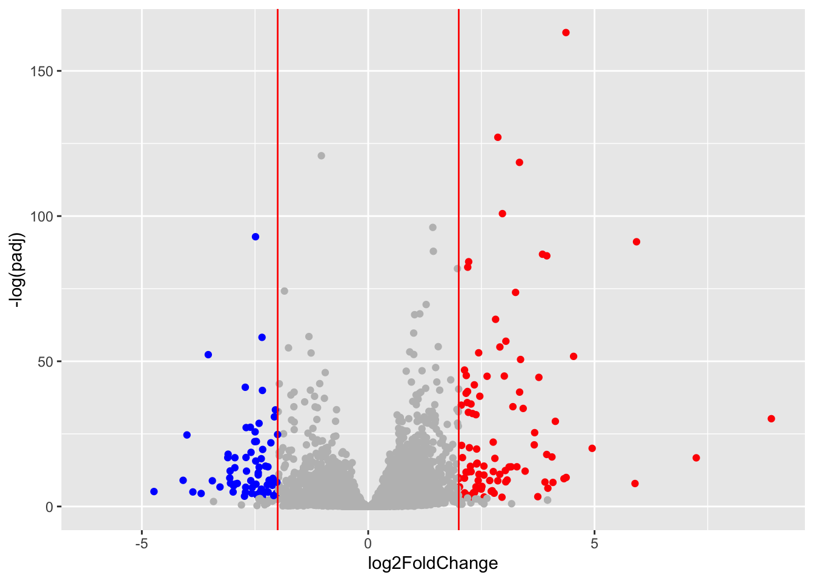

counts <- read.csv("airway_scaledcounts.csv", row.names=1)
metadata <- read.csv("airway_metadata.csv")Class13: RNA Seq (pt.1)
Today we will analyze data from a published RNA-seq experiment where airway smooth muscle cells were treated with dexamethasone, a synthetic glucocorticoid steroid with anti-inflammatory effects.
Import countData and colData
There are two datasets I need to import/read
countData the transcript counts per gene (rows) in the different experiments
colData information (a.k.a metadata) about column (i.e experiments) in countData
we can have a wee peak at these with head()
head(counts) SRR1039508 SRR1039509 SRR1039512 SRR1039513 SRR1039516
ENSG00000000003 723 486 904 445 1170
ENSG00000000005 0 0 0 0 0
ENSG00000000419 467 523 616 371 582
ENSG00000000457 347 258 364 237 318
ENSG00000000460 96 81 73 66 118
ENSG00000000938 0 0 1 0 2
SRR1039517 SRR1039520 SRR1039521
ENSG00000000003 1097 806 604
ENSG00000000005 0 0 0
ENSG00000000419 781 417 509
ENSG00000000457 447 330 324
ENSG00000000460 94 102 74
ENSG00000000938 0 0 0metadata id dex celltype geo_id
1 SRR1039508 control N61311 GSM1275862
2 SRR1039509 treated N61311 GSM1275863
3 SRR1039512 control N052611 GSM1275866
4 SRR1039513 treated N052611 GSM1275867
5 SRR1039516 control N080611 GSM1275870
6 SRR1039517 treated N080611 GSM1275871
7 SRR1039520 control N061011 GSM1275874
8 SRR1039521 treated N061011 GSM1275875Q1. How many genes are in this dataset?
nrow(counts)[1] 38694Q2. How many ‘countrol’ cell lines do we have?
table(metadata$dex)
control treated
4 4 sum( metadata$dex =="control")[1] 4We can find the average (mean) count values per gene for all “control” experiments and compare it to the mean values for “treated”.
- Extract all “control” columns from the
countsdata - Find the mean value for each gene in these columns >Q3. How would you make the above code in either approach more robust? Is there a function that could help here?
control.inds <- metadata$dex =="control"
control.counts <- counts[ , control.inds]dim(control.counts)[1] 38694 4Now find the row wise mean
control.mean <- rowSums(control.counts)/ncol(control.counts)
head(control.mean)ENSG00000000003 ENSG00000000005 ENSG00000000419 ENSG00000000457 ENSG00000000460
900.75 0.00 520.50 339.75 97.25
ENSG00000000938
0.75 Q4. Follow the same procedure for the treated samples (i.e. calculate the mean per gene across drug treated samples and assign to a labeled vector called treated.mean)
treated.inds <- metadata$dex =="treated"
treated.counts <- counts[,treated.inds]
treated.mean <- apply(treated.counts, 1, mean)
head(treated.mean)ENSG00000000003 ENSG00000000005 ENSG00000000419 ENSG00000000457 ENSG00000000460
658.00 0.00 546.00 316.50 78.75
ENSG00000000938
0.00 Let’s put these two mean values together for easy book-keeping
meancounts <- data.frame(control.mean, treated.mean)
head(meancounts) control.mean treated.mean
ENSG00000000003 900.75 658.00
ENSG00000000005 0.00 0.00
ENSG00000000419 520.50 546.00
ENSG00000000457 339.75 316.50
ENSG00000000460 97.25 78.75
ENSG00000000938 0.75 0.00Q5 (a). Create a scatter plot showing the mean of the treated samples against the mean of the control samples. Your plot should look something like the following.
Let’s have a wee look -i.e plot control.mean vs treated.mean
plot(meancounts)
Q5 (b).You could also use the ggplot2 package to make this figure producing the plot below. What geom_?() function would you use for this plot?
library(ggplot2)
ggplot(meancounts) +
aes(control.mean, treated.mean) +
geom_point(alpha=0.3)Q6. Try plotting both axes on a log scale. What is the argument to plot() that allows you to do this?
Whenever we see data that is so heavily skewed like this we often log transform it so we can see what is going on more easily.
plot(meancounts, log="xy")Warning in xy.coords(x, y, xlabel, ylabel, log): 15032 x values <= 0 omitted
from logarithmic plotWarning in xy.coords(x, y, xlabel, ylabel, log): 15281 y values <= 0 omitted
from logarithmic plot
We most often work in log2 units as this makes the math easier. Let’s have a plot to see this.
# control / treated
log2(20/20)[1] 0log2(40/20)[1] 1log2(80/20)[1] 2# treated/control
log2(20/40)[1] -1We can now add “log2 fold-change” values to our meancounts dataset.
meancounts$log2fc <- log2(meancounts$treated.mean / meancounts$control.mean )
head(meancounts) control.mean treated.mean log2fc
ENSG00000000003 900.75 658.00 -0.45303916
ENSG00000000005 0.00 0.00 NaN
ENSG00000000419 520.50 546.00 0.06900279
ENSG00000000457 339.75 316.50 -0.10226805
ENSG00000000460 97.25 78.75 -0.30441833
ENSG00000000938 0.75 0.00 -InfWe need a filter out zero count genes - i.e. remove the rows (genes) that have a 0 value in either control or treated means.
to.keep <-rowSums(meancounts[,1:2] ==0) ==0
mycounts <- meancounts[to.keep,]
nrow(mycounts)[1] 21817How many genes are “up” regulated at the common log2 fold-change threshold of +2.
up.inds <- meancounts$log2fc >= 2
sum(up.inds, na.rm=T)[1] 1910up.inds <- mycounts$log2fc >= 2
sum(up.inds, na.rm=T)[1] 314How many genes are “down” regulated at the threshold of -2?
down.inds <- meancounts$log2fc <= -2
sum(down.inds, na.rm =T)[1] 2330DESeq 2 analysis
To do this the right way we need to consider the significance of the differences not just their magnitude.
library(DESeq2)To use this package it wants countData and colData in a specific format.
dds <- DESeqDataSetFromMatrix(countData = counts,
colData = metadata,
design = ~dex)converting counts to integer modeWarning in DESeqDataSet(se, design = design, ignoreRank): some variables in
design formula are characters, converting to factorsdds <-DESeq(dds)estimating size factorsestimating dispersionsgene-wise dispersion estimatesmean-dispersion relationshipfinal dispersion estimatesfitting model and testingExtract my results
res <- results (dds)
head(res)log2 fold change (MLE): dex treated vs control
Wald test p-value: dex treated vs control
DataFrame with 6 rows and 6 columns
baseMean log2FoldChange lfcSE stat pvalue
<numeric> <numeric> <numeric> <numeric> <numeric>
ENSG00000000003 747.194195 -0.3507030 0.168246 -2.084470 0.0371175
ENSG00000000005 0.000000 NA NA NA NA
ENSG00000000419 520.134160 0.2061078 0.101059 2.039475 0.0414026
ENSG00000000457 322.664844 0.0245269 0.145145 0.168982 0.8658106
ENSG00000000460 87.682625 -0.1471420 0.257007 -0.572521 0.5669691
ENSG00000000938 0.319167 -1.7322890 3.493601 -0.495846 0.6200029
padj
<numeric>
ENSG00000000003 0.163035
ENSG00000000005 NA
ENSG00000000419 0.176032
ENSG00000000457 0.961694
ENSG00000000460 0.815849
ENSG00000000938 NAPlot of fold-change cs P-value (adjusted for multiple testing)
plot(res$log2FoldChange, res$padj)
Take to log of the P-value
plot(res$log2FoldChange, log(res$padj))
log(0.01)[1] -4.60517log(0.0000000001)[1] -23.02585We can just flip that y-axis by putting a minus sign in front of the log
plot(res$log2FoldChange, -log(res$padj),
xlab="log2 Fold-change",
ylab="-log(p-value")Let’s save our work to date
write.csv(res, file="myresults.csv")To finish off let’s make a nice volcano plot
-Add the log2 threshold lines at +2/-2 -Add P-value threshold lines at 0.05 -Add color to highlight the subset of genes that meet both of the above thresholds. (pick you favorite color)
Make it with ggplot please…
mycols <- rep("gray", nrow(res))
mycols[res$log2FoldChange >= 2] <- "red"
mycols[res$log2FoldChange <= -2] <- "blue"
mycols[res$padj > 0.05] <- "gray"ggplot(res) +
aes(log2FoldChange, -log(padj)) +
geom_point(col=mycols) +
geom_vline(xintercept = c(-2,2), col="red")Warning: Removed 23549 rows containing missing values or values outside the scale range
(`geom_point()`).
# Setup our custom point color vector
mycols <- rep("gray", nrow(res))
mycols[ abs(res$log2FoldChange) > 2 ] <- "red"
inds <- (res$padj < 0.01) & (abs(res$log2FoldChange) > 2 )
mycols[ inds ] <- "blue"
# Volcano plot with custom colors
plot( res$log2FoldChange, -log(res$padj),
col=mycols, ylab="-Log(P-value)", xlab="Log2(FoldChange)" )
# Cut-off lines
abline(v=c(-2,2), col="gray", lty=2)
abline(h=-log(0.1), col="gray", lty=2)
Add gene annotation data
Now the question is what are the blue points in the above volcano plot - i.e. what are the genes most influenced by drug treatment here
read.csvfunction (file, header = TRUE, sep = ",", quote = "\"", dec = ".",
fill = TRUE, comment.char = "", ...)
read.table(file = file, header = header, sep = sep, quote = quote,
dec = dec, fill = fill, comment.char = comment.char, ...)
<bytecode: 0x7f8b57c1ac00>
<environment: namespace:utils>We will use some BioConductor packages to “map” the ENSEMBL ids to more useful gee symbol names/ids.
We can install these packages with BiocManager::install("AnnotationDbi")
library(AnnotationDbi)
library(org.Hs.eg.db)What database identifiers can I translate between here:
columns(org.Hs.eg.db) [1] "ACCNUM" "ALIAS" "ENSEMBL" "ENSEMBLPROT" "ENSEMBLTRANS"
[6] "ENTREZID" "ENZYME" "EVIDENCE" "EVIDENCEALL" "GENENAME"
[11] "GENETYPE" "GO" "GOALL" "IPI" "MAP"
[16] "OMIM" "ONTOLOGY" "ONTOLOGYALL" "PATH" "PFAM"
[21] "PMID" "PROSITE" "REFSEQ" "SYMBOL" "UCSCKG"
[26] "UNIPROT" We can now use the mapIDs() function to translate /map between these different identifier formats.
res$symbol <- mapIds(org.Hs.eg.db, keys =rownames(res),
keytype = "ENSEMBL",
column = "SYMBOL")'select()' returned 1:many mapping between keys and columnsres$genename <- mapIds(org.Hs.eg.db, keys =rownames(res),
keytype = "ENSEMBL",
column = "GENENAME")'select()' returned 1:many mapping between keys and columnsres$entrez <- mapIds(org.Hs.eg.db, keys =rownames(res),
keytype = "ENSEMBL",
column = "ENTREZID")'select()' returned 1:many mapping between keys and columnshead(res)log2 fold change (MLE): dex treated vs control
Wald test p-value: dex treated vs control
DataFrame with 6 rows and 9 columns
baseMean log2FoldChange lfcSE stat pvalue
<numeric> <numeric> <numeric> <numeric> <numeric>
ENSG00000000003 747.194195 -0.3507030 0.168246 -2.084470 0.0371175
ENSG00000000005 0.000000 NA NA NA NA
ENSG00000000419 520.134160 0.2061078 0.101059 2.039475 0.0414026
ENSG00000000457 322.664844 0.0245269 0.145145 0.168982 0.8658106
ENSG00000000460 87.682625 -0.1471420 0.257007 -0.572521 0.5669691
ENSG00000000938 0.319167 -1.7322890 3.493601 -0.495846 0.6200029
padj symbol genename entrez
<numeric> <character> <character> <character>
ENSG00000000003 0.163035 TSPAN6 tetraspanin 6 7105
ENSG00000000005 NA TNMD tenomodulin 64102
ENSG00000000419 0.176032 DPM1 dolichyl-phosphate m.. 8813
ENSG00000000457 0.961694 SCYL3 SCY1 like pseudokina.. 57147
ENSG00000000460 0.815849 FIRRM FIGNL1 interacting r.. 55732
ENSG00000000938 NA FGR FGR proto-oncogene, .. 2268PAthway analysis
Now I know the gene names and their IDs in different databases I want to know what type of biology they are involved in…
This is the job of “pathway analysis’ (a.k.a”gene set enrichment”)
There are tones of different BioConductor packages for pathway analysis here we use just one of them called gage and pathview. I will install these packages with BiocManager::install(c("gage","pathview","gageData"))
library(gage)library(gageData)
library(pathview)##############################################################################
Pathview is an open source software package distributed under GNU General
Public License version 3 (GPLv3). Details of GPLv3 is available at
http://www.gnu.org/licenses/gpl-3.0.html. Particullary, users are required to
formally cite the original Pathview paper (not just mention it) in publications
or products. For details, do citation("pathview") within R.
The pathview downloads and uses KEGG data. Non-academic uses may require a KEGG
license agreement (details at http://www.kegg.jp/kegg/legal.html).
##############################################################################Load up the KEGG genesets
data(kegg.sets.hs)head(kegg.sets.hs)$`hsa00232 Caffeine metabolism`
[1] "10" "1544" "1548" "1549" "1553" "7498" "9"
$`hsa00983 Drug metabolism - other enzymes`
[1] "10" "1066" "10720" "10941" "151531" "1548" "1549" "1551"
[9] "1553" "1576" "1577" "1806" "1807" "1890" "221223" "2990"
[17] "3251" "3614" "3615" "3704" "51733" "54490" "54575" "54576"
[25] "54577" "54578" "54579" "54600" "54657" "54658" "54659" "54963"
[33] "574537" "64816" "7083" "7084" "7172" "7363" "7364" "7365"
[41] "7366" "7367" "7371" "7372" "7378" "7498" "79799" "83549"
[49] "8824" "8833" "9" "978"
$`hsa01100 Metabolic pathways`
[1] "10" "100" "10007" "100137049" "10020" "10026"
[7] "100510686" "10063" "10157" "10170" "10195" "10201"
[13] "10229" "10312" "10317" "10327" "10331" "1036"
[19] "10380" "10390" "1040" "10400" "10402" "10423"
[25] "10449" "10476" "10554" "10555" "10558" "1056"
[31] "10588" "10606" "10621" "10622" "10623" "10632"
[37] "10654" "1066" "10678" "10682" "10690" "10714"
[43] "10720" "10768" "10797" "10826" "10841" "10855"
[49] "10873" "10901" "10905" "10941" "10975" "10993"
[55] "10998" "11019" "11041" "1109" "11112" "11128"
[61] "1119" "1120" "11226" "11227" "11232" "112483"
[67] "11253" "11282" "11285" "113026" "11320" "11343"
[73] "113451" "113612" "114805" "1152" "1158" "1159"
[79] "1160" "116285" "117248" "119548" "120227" "121278"
[85] "122481" "122622" "123099" "123745" "123876" "124"
[91] "124454" "124975" "125" "125061" "125965" "125981"
[97] "126" "126328" "126792" "127" "127124" "128"
[103] "128869" "129607" "129642" "130" "130013" "131"
[109] "1312" "131669" "132" "132158" "1327" "132789"
[115] "1329" "1337" "1339" "1340" "134147" "1345"
[121] "1349" "1350" "1351" "135152" "1352" "1353"
[127] "1355" "1371" "1373" "137964" "138050" "138429"
[133] "139596" "140838" "1431" "144193" "144245" "145226"
[139] "146664" "1491" "15" "1503" "150763" "151056"
[145] "151531" "1537" "154141" "1543" "1544" "1548"
[151] "1549" "155066" "1551" "1553" "1555" "1557"
[157] "1558" "1559" "1562" "1571" "1573" "157506"
[163] "1576" "1577" "1579" "158" "1581" "1582"
[169] "1583" "1584" "1585" "1586" "1588" "1589"
[175] "159" "1593" "1594" "1595" "160287" "1603"
[181] "1606" "1607" "1608" "160851" "1609" "1610"
[187] "1621" "162417" "162466" "1629" "1633" "1635"
[193] "1638" "1644" "1650" "166929" "168391" "169355"
[199] "170712" "171568" "1716" "1717" "1718" "1719"
[205] "1723" "1737" "1738" "1743" "1757" "178"
[211] "1786" "1787" "1788" "1789" "1798" "18"
[217] "1806" "1807" "1841" "1854" "189" "1890"
[223] "1892" "191" "192134" "1962" "197258" "199857"
[229] "201595" "2023" "2026" "2027" "203" "204"
[235] "205" "2053" "2058" "210" "211" "212"
[241] "2131" "2132" "2134" "2135" "2137" "216"
[247] "217" "218" "2180" "2181" "2182" "2184"
[253] "219" "2194" "220" "2203" "221" "221223"
[259] "221823" "222" "2222" "2224" "223" "2235"
[265] "224" "226" "2271" "22845" "22856" "229"
[271] "22928" "22929" "22934" "22978" "230" "23057"
[277] "231" "23193" "23236" "23305" "23382" "23396"
[283] "23417" "23475" "23483" "23498" "23530" "23545"
[289] "23553" "23556" "2356" "23600" "23649" "23761"
[295] "239" "240" "242" "245972" "245973" "246"
[301] "246721" "247" "248" "249" "250" "251"
[307] "2523" "2524" "2525" "2526" "2527" "2528"
[313] "2529" "2530" "2531" "253558" "2538" "2539"
[319] "254531" "2548" "256435" "2571" "2572" "25796"
[325] "2581" "2582" "2583" "25834" "2584" "2585"
[331] "2588" "25885" "2589" "2590" "25902" "2591"
[337] "2592" "259230" "2593" "259307" "2595" "2597"
[343] "26007" "26035" "2618" "262" "26227" "26229"
[349] "26275" "26279" "2628" "26289" "2629" "26290"
[355] "26301" "2632" "26330" "2639" "2643" "2645"
[361] "2650" "2651" "2673" "2678" "2683" "2686"
[367] "2687" "270" "27010" "27034" "27087" "27089"
[373] "27090" "271" "2710" "2712" "27124" "27165"
[379] "272" "2720" "27235" "2729" "2730" "27306"
[385] "2731" "27349" "27430" "2744" "2746" "2747"
[391] "275" "2752" "276" "2762" "277" "278"
[397] "279" "2799" "28" "280" "2805" "2806"
[403] "2821" "283208" "283871" "284098" "284541" "2875"
[409] "290" "29071" "2937" "2954" "29796" "2987"
[415] "29880" "2990" "29906" "29920" "29922" "29925"
[421] "29926" "29929" "29947" "29958" "29968" "30"
[427] "3028" "3030" "3032" "3033" "3034" "3067"
[433] "3073" "3074" "3081" "30814" "30815" "30833"
[439] "30834" "3098" "3099" "31" "3101" "314"
[445] "3141" "3145" "3155" "3156" "3157" "3158"
[451] "316" "317749" "32" "3242" "3251" "326625"
[457] "3283" "3284" "3290" "3291" "3292" "3293"
[463] "3294" "3295" "33" "3340" "3373" "337876"
[469] "339221" "34" "340485" "341392" "3417" "3418"
[475] "3419" "341947" "3420" "3421" "3422" "3423"
[481] "3425" "348158" "349565" "35" "353" "36"
[487] "3612" "3613" "3614" "3615" "3620" "3628"
[493] "3631" "3632" "3633" "3636" "37" "3703"
[499] "3704" "3705" "3706" "3707" "3712" "374291"
[505] "374378" "3795" "38" "383" "384" "387787"
[511] "39" "3906" "391013" "3938" "3939" "3945"
[517] "3948" "3990" "4047" "4048" "4051" "4056"
[523] "411" "4121" "4122" "4124" "4128" "4129"
[529] "4143" "4144" "4190" "4191" "4199" "4245"
[535] "4247" "4248" "4249" "427" "4329" "435"
[541] "4351" "4357" "438" "440" "440138" "440567"
[547] "441024" "441531" "442117" "445" "4507" "4508"
[553] "4509" "4512" "4513" "4514" "4519" "4522"
[559] "4524" "4535" "4536" "4537" "4538" "4539"
[565] "4540" "4541" "4548" "4594" "4597" "4598"
[571] "4669" "4694" "4695" "4696" "4697" "4698"
[577] "47" "4700" "4701" "4702" "4704" "4705"
[583] "4706" "4707" "4708" "4709" "471" "4710"
[589] "4711" "4712" "4713" "4714" "4715" "4716"
[595] "4717" "4718" "4719" "4720" "4722" "4723"
[601] "4724" "4725" "4726" "4728" "4729" "4731"
[607] "48" "4830" "4831" "4832" "4833" "4837"
[613] "4842" "4843" "4846" "4860" "4907" "493911"
[619] "4942" "4952" "4953" "4967" "498" "50"
[625] "5009" "501" "5033" "5048" "50484" "50487"
[631] "5049" "5050" "5051" "5053" "506" "50614"
[637] "50617" "50700" "50814" "509" "5091" "5095"
[643] "5096" "51" "51004" "5105" "51056" "5106"
[649] "51074" "51082" "51084" "51102" "51109" "51144"
[655] "51166" "51179" "51181" "51196" "51227" "51251"
[661] "51268" "513" "5130" "51301" "51380" "51382"
[667] "514" "51477" "51478" "515" "51540" "516"
[673] "5160" "51601" "51604" "51606" "5161" "5162"
[679] "5167" "5169" "517" "51703" "51727" "51728"
[685] "51733" "51763" "518" "51805" "51809" "5198"
[691] "521" "5211" "5213" "5214" "522" "5223"
[697] "5224" "5226" "523" "5230" "5232" "5236"
[703] "525" "526" "527" "5277" "5279" "528"
[709] "5281" "5283" "5286" "5287" "5288" "5289"
[715] "529" "5297" "5298" "5313" "5315" "5319"
[721] "5320" "5321" "5322" "533" "5330" "5331"
[727] "5332" "5333" "5335" "53354" "5336" "5337"
[733] "5338" "534" "535" "53630" "537" "5372"
[739] "5373" "539" "53947" "5406" "5407" "5408"
[745] "5409" "54107" "54187" "5422" "5424" "5425"
[751] "5426" "5427" "5428" "5430" "5431" "5432"
[757] "5433" "5434" "54344" "5435" "5436" "54363"
[763] "5437" "5438" "5439" "5440" "5441" "5444"
[769] "5445" "5446" "54480" "54490" "54575" "54576"
[775] "54577" "54578" "54579" "54600" "54657" "54658"
[781] "54659" "54675" "5471" "54802" "548596" "548644"
[787] "549" "54947" "54963" "54965" "5498" "54988"
[793] "54995" "55163" "55191" "55224" "55229" "55256"
[799] "55276" "55300" "55301" "55304" "55312" "55361"
[805] "5538" "55454" "55500" "55512" "55568" "5557"
[811] "5558" "55627" "55650" "55703" "55750" "55753"
[817] "55790" "55808" "55821" "55902" "55907" "56052"
[823] "5625" "56267" "5631" "5634" "56474" "56623"
[829] "56624" "56655" "56848" "56894" "56895" "56898"
[835] "56901" "56913" "56922" "56953" "56994" "570"
[841] "57016" "57026" "57134" "5723" "5730" "5740"
[847] "5742" "5743" "57452" "574537" "57678" "57804"
[853] "57818" "57834" "5805" "5831" "5832" "5833"
[859] "58510" "5859" "586" "5860" "587" "593"
[865] "594" "5980" "60490" "60495" "6120" "6184"
[871] "6185" "622" "6240" "6241" "6296" "6303"
[877] "6307" "6309" "6342" "635" "6389" "6390"
[883] "6391" "63917" "6392" "64087" "64131" "64132"
[889] "64409" "64425" "6448" "64579" "64600" "646625"
[895] "6470" "6472" "6476" "64768" "6480" "64802"
[901] "64816" "6482" "6483" "6484" "6487" "6489"
[907] "64902" "65220" "65263" "654364" "6609" "661"
[913] "6610" "6611" "6652" "6675" "6677" "669"
[919] "6697" "6713" "6718" "6723" "683" "686"
[925] "6888" "6898" "6916" "6999" "7054" "7083"
[931] "7084" "7086" "7108" "7166" "7167" "7173"
[937] "7263" "7264" "729020" "7298" "7299" "7306"
[943] "7357" "7358" "7360" "7363" "7364" "7365"
[949] "7366" "7367" "7368" "7371" "7372" "7378"
[955] "7381" "7384" "7385" "7386" "7388" "7389"
[961] "7390" "7498" "7841" "790" "79053" "79087"
[967] "7915" "79178" "7923" "79369" "7941" "79586"
[973] "79611" "79623" "79646" "79695" "79717" "79796"
[979] "79799" "79814" "79868" "79888" "7991" "80025"
[985] "80055" "80142" "80146" "80201" "80270" "80308"
[991] "80339" "80347" "8050" "81490" "81579" "81616"
[997] "81849" "81888" "8277" "8309" "8310" "83440"
[1003] "83549" "8372" "8382" "8394" "8395" "8398"
[1009] "8399" "84002" "84076" "84172" "84245" "84265"
[1015] "84274" "84284" "84532" "84618" "84620" "84647"
[1021] "84649" "84693" "847" "84701" "84706" "84720"
[1027] "84735" "84803" "84812" "84890" "84920" "84992"
[1033] "8509" "8513" "8525" "8526" "8527" "8529"
[1039] "85365" "8540" "85465" "8560" "8564" "8566"
[1045] "8608" "8611" "8612" "8613" "8630" "8639"
[1051] "8659" "8681" "8692" "8693" "8694" "8702"
[1057] "8703" "8704" "8705" "8706" "8707" "8708"
[1063] "873" "8733" "874" "875" "8760" "8789"
[1069] "8790" "8801" "8802" "8803" "8813" "8818"
[1075] "8821" "883" "8833" "8854" "8867" "8869"
[1081] "8871" "8877" "8879" "8942" "8972" "8974"
[1087] "89869" "8992" "9" "90423" "9060" "9061"
[1093] "9091" "9114" "91373" "9162" "91734" "9197"
[1099] "9245" "92483" "9249" "9296" "93034" "93183"
[1105] "9331" "9348" "9374" "9377" "9380" "9388"
[1111] "94005" "9453" "9468" "9487" "9488" "9489"
[1117] "95" "9514" "9517" "952" "9533" "9536"
[1123] "9550" "9551" "9563" "9588" "9615" "978"
[1129] "9791" "9942" "9945"
$`hsa00230 Purine metabolism`
[1] "100" "10201" "10606" "10621" "10622" "10623" "107" "10714"
[9] "108" "10846" "109" "111" "11128" "11164" "112" "113"
[17] "114" "115" "122481" "122622" "124583" "132" "158" "159"
[25] "1633" "171568" "1716" "196883" "203" "204" "205" "221823"
[33] "2272" "22978" "23649" "246721" "25885" "2618" "26289" "270"
[41] "271" "27115" "272" "2766" "2977" "2982" "2983" "2984"
[49] "2986" "2987" "29922" "3000" "30833" "30834" "318" "3251"
[57] "353" "3614" "3615" "3704" "377841" "471" "4830" "4831"
[65] "4832" "4833" "4860" "4881" "4882" "4907" "50484" "50940"
[73] "51082" "51251" "51292" "5136" "5137" "5138" "5139" "5140"
[81] "5141" "5142" "5143" "5144" "5145" "5146" "5147" "5148"
[89] "5149" "5150" "5151" "5152" "5153" "5158" "5167" "5169"
[97] "51728" "5198" "5236" "5313" "5315" "53343" "54107" "5422"
[105] "5424" "5425" "5426" "5427" "5430" "5431" "5432" "5433"
[113] "5434" "5435" "5436" "5437" "5438" "5439" "5440" "5441"
[121] "5471" "548644" "55276" "5557" "5558" "55703" "55811" "55821"
[129] "5631" "5634" "56655" "56953" "56985" "57804" "58497" "6240"
[137] "6241" "64425" "646625" "654364" "661" "7498" "8382" "84172"
[145] "84265" "84284" "84618" "8622" "8654" "87178" "8833" "9060"
[153] "9061" "93034" "953" "9533" "954" "955" "956" "957"
[161] "9583" "9615"
$`hsa05340 Primary immunodeficiency`
[1] "100" "115650" "23495" "29760" "29851" "326" "3543" "3561"
[9] "3575" "3718" "3932" "4261" "57379" "5788" "5896" "5897"
[17] "5993" "5994" "64421" "6890" "6891" "695" "7374" "7535"
[25] "8517" "8625" "915" "916" "920" "925" "926" "930"
[33] "958" "959" "973"
$`hsa04514 Cell adhesion molecules (CAMs)`
[1] "1000" "1001" "100133583" "1002" "1003" "100506658"
[7] "1013" "10666" "10686" "1272" "1364" "1365"
[13] "1366" "137075" "1462" "1493" "149461" "214"
[19] "22871" "23114" "23308" "23562" "23705" "24146"
[25] "257194" "25945" "26047" "26285" "2734" "29126"
[31] "29851" "3105" "3106" "3107" "3108" "3109"
[37] "3111" "3112" "3113" "3115" "3117" "3118"
[43] "3119" "3122" "3123" "3125" "3126" "3127"
[49] "3133" "3134" "3135" "3383" "3384" "3385"
[55] "3655" "3676" "3680" "3683" "3684" "3685"
[61] "3688" "3689" "3695" "3696" "3897" "4099"
[67] "4267" "4359" "4684" "4685" "4756" "4897"
[73] "4950" "49861" "5010" "50848" "51208" "5133"
[79] "5175" "53842" "54413" "57502" "57555" "57863"
[85] "5788" "5792" "5797" "5817" "5818" "5819"
[91] "58494" "6382" "6383" "6385" "6401" "6402"
[97] "6403" "6404" "652614" "6614" "6693" "6900"
[103] "7122" "7412" "80380" "80381" "8174" "83700"
[109] "8506" "8516" "9019" "9071" "9073" "9074"
[115] "9075" "9076" "9080" "90952" "914" "920"
[121] "923" "925" "926" "933" "9369" "9378"
[127] "9379" "940" "941" "942" "947" "958"
[133] "959" "965" "9672" "999" We will use these KEGG genesets (a.k.a pathways) and our res results to see what overlaps. To do this we will use the gage() function.
For input gage() wants just a vector of importance -in our case FoldChange values.
foldchanges <-res$log2FoldChangeVectors in R can have “names that are useful for bookkeeping so we know what a given value corresponding to the data
x <- c(10,100,20)
names(x) <- c("barry", "alice", "chandra")
x barry alice chandra
10 100 20 Let’s put names on our foldchanges vector - here we will use res$entrez
names(foldchanges) <- res$entrezNow we can run “pathway analysis”
# Get the results
keggres =gage(foldchanges, gsets=kegg.sets.hs)head(keggres$less) p.geomean stat.mean
hsa05332 Graft-versus-host disease 0.0004250461 -3.473346
hsa04940 Type I diabetes mellitus 0.0017820293 -3.002352
hsa05310 Asthma 0.0020045888 -3.009050
hsa04672 Intestinal immune network for IgA production 0.0060434515 -2.560547
hsa05330 Allograft rejection 0.0073678825 -2.501419
hsa04340 Hedgehog signaling pathway 0.0133239547 -2.248547
p.val q.val
hsa05332 Graft-versus-host disease 0.0004250461 0.09053483
hsa04940 Type I diabetes mellitus 0.0017820293 0.14232581
hsa05310 Asthma 0.0020045888 0.14232581
hsa04672 Intestinal immune network for IgA production 0.0060434515 0.31387180
hsa05330 Allograft rejection 0.0073678825 0.31387180
hsa04340 Hedgehog signaling pathway 0.0133239547 0.47300039
set.size exp1
hsa05332 Graft-versus-host disease 40 0.0004250461
hsa04940 Type I diabetes mellitus 42 0.0017820293
hsa05310 Asthma 29 0.0020045888
hsa04672 Intestinal immune network for IgA production 47 0.0060434515
hsa05330 Allograft rejection 36 0.0073678825
hsa04340 Hedgehog signaling pathway 56 0.0133239547We can get a pathway image file with our genesets highlighted via the pathview() function.
pathview(foldchanges, pathway.id = "hsa05310")'select()' returned 1:1 mapping between keys and columnsInfo: Working in directory /Users/ronlien/Desktop/Bimm 143/Class13Info: Writing image file hsa05310.pathview.pngInsert this figure in my report